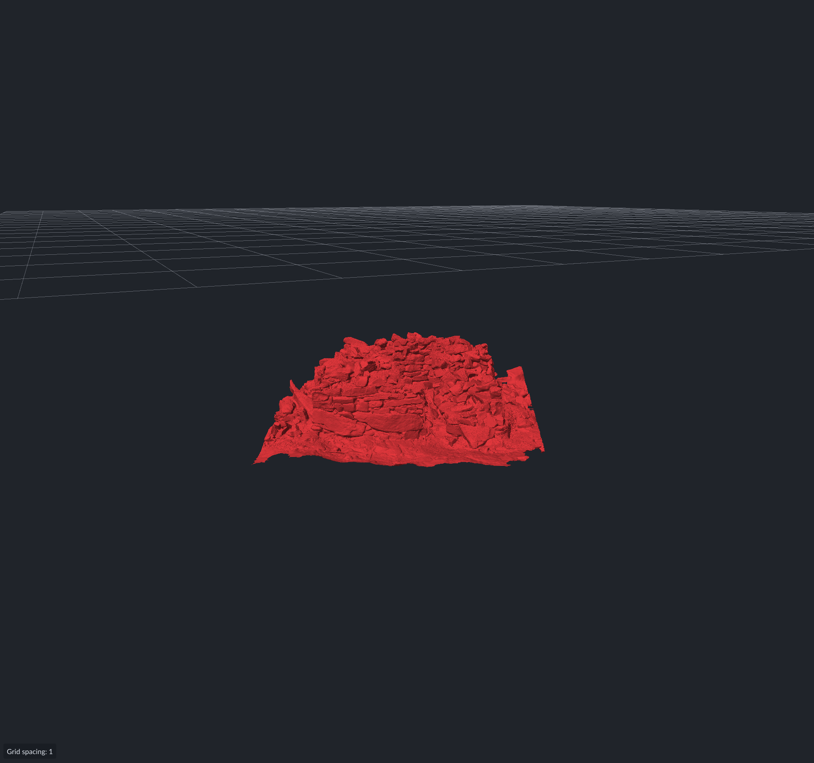

14 October 2026 · Release · Ryzen 7 5800H · RTX 3070 Laptop
Median time to all tools ready: 46.69 s → 28.14 s. This is a 39.7% reduction in three alternating pairs.
| Measurement | Serial s | Parallel s | Less time |
|---|---|---|---|
| Full post-load CPU preparation | 28.908 | 12.836 | 55.6% |
| Point + annotation elapsed span | 24.176 | 9.249 | 61.7% |
| Request to all tools ready | 46.688 | 28.142 | 39.7% |
| Request to first completed GPU frame | 17.488 | 15.092 | 13.7% |
The point and annotation preparation branches now run at the same time. The annotation branch is the longer branch in all three changed runs. Median overlap is 6.549 s. Use the measured elapsed span or full post-load duration to assess the benefit. Do not add the individual phase savings.
Sorting starts after the first completed scene frame. The change does not target that first frame. The initial import and first-frame times vary between these runs; do not attribute their difference to spatial sorting.
| Measurement | Serial s | Parallel s | Less time |
|---|---|---|---|
| Annotation Morton-key generation | 4.954 | 1.020 | 79.4% |
| Annotation stable radix sort | 3.733 | 1.442 | 61.4% |
| Point Morton-key generation | 1.821 | 0.302 | 83.4% |
| Point stable radix sort | 1.437 | 0.497 | 65.4% |
These are phase wall times from the full viewer pipeline. Concurrent work can affect them. Process CPU counters can include the other branch and the renderer. They are not isolated kernel throughput measurements.
Point keys use 65,536-entry batches. Annotation key workers use separate output ranges for blocks of triangles. A serial compaction pass retains block order when triangles have invalid indices or nonfinite coordinates.
The shared four-pass radix sort counts each contiguous input chunk separately. Bucket prefixes follow input chunk order. Each chunk writes to its own range in each bucket and scans its input in order. Equal keys retain their input order. Original triangle offsets and original point IDs stay attached to the keys.
The existing global analysis worker budget also controls spatial preparation and the coordinator helper. It permits at most eight helper threads on this machine. The caller drains work too. Jobs fall back to the caller when the budget is occupied. Cancellation callbacks are serialized. All helpers join before a result or exception leaves the operation.
The annotation fingerprint pass retains its original sequential hash operations. It does not combine parallel hashes. Median fingerprint/block preparation is 5.128 s in the changed runs and is now a large part of the annotation critical path.
The Release application and test targets compile without warnings. All 84 default tests and all 8 slow tests pass. Five new test cases cover full-width radix keys, stable ties, occupied worker budgets, nested jobs, failure/cancellation cleanup, invalid triangles, overlapping and reordered annotation groups, source fingerprints, reversed point-source IDs, positions, and post-load result equivalence.
All six full loads have the same scene bounds and counts: 38,414,391 render vertices, 75,771,986 triangles, and one group. The model pixels match. Two serial captures differ from the other four captures by four pixels in the grid-spacing label at the bottom left. The raw screenshots are preserved. The five new CPU tests verify source identities and fingerprints on synthetic meshes; the screenshot comparison verifies the full BearTrap solid view.
Median process peak working set: 8.940 GiB before and 8.941 GiB after. This is the process lifetime peak, which includes parsing. It does not isolate temporary spatial-sort memory.
| Run | Tools ready s | Post-load CPU s | First GPU frame s | Peak WS GiB |
|---|---|---|---|---|
| r1-baseline | 47.674 | 28.908 | 18.523 | 8.942 |
| r1-parallel | 28.858 | 12.900 | 15.707 | 8.941 |
| r2-baseline | 46.688 | 28.963 | 17.488 | 8.940 |
| r2-parallel | 28.142 | 12.836 | 15.092 | 8.942 |
| r3-baseline | 43.617 | 27.932 | 15.517 | 8.940 |
| r3-parallel | 27.923 | 12.759 | 14.923 | 8.941 |
The serial baseline is application revision 0a29069f1f5ab758df1ab57c2f836ff8ecd6165f. The changed sources are recorded by hash in summary.json and included in measurements.zip. Builds use vs2026-vcpkg with explicit --config Release. The serial executables, runtime DLLs, and assets were frozen before the changed build.
Run order: serial/parallel, parallel/serial, serial/parallel. Each run uses a fresh hidden instrumented viewer and reads the file before launch to warm the file cache. No cache is flushed. No build, tests, or profiler runs during these measurements. Capture uses the existing end-to-end runner and production hidden-window pacing.
The input is D:/temp/obj_tests/20190810_BearTrap_Ground_Model.obj, 7,108,991,827 bytes. Its SHA256 matches the original report: 7abcb6005617270f3c799292991b858a16e0cddf39b9655eb3f1d691b2a45329. These fresh serial durations differ from the older report. Use the paired serial baseline for this comparison. Three pairs on one computer do not establish scaling on other hardware.
Reproduction · Numeric summary · Raw results, traces, logs, and changed-source snapshots · Verified screenshot
